作者：创世魂
● 概述
本类中的功能并不能单独使用，必须基于窗口组件进行操作，例如：编辑框、按钮等。
● 可停留焦点(读写)
帮助文档如下图：
本属性的主要作用可以决定在使用TAB按键进行焦点切换时，当前组件是否允许获得焦点。
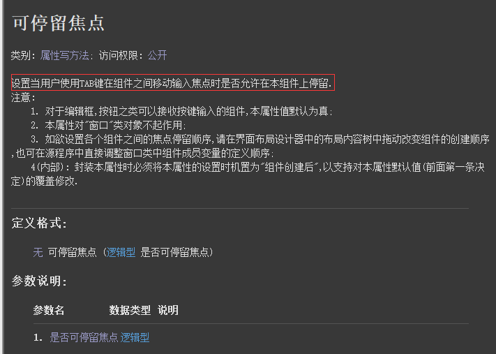
界面设计如下图：
在窗口中放三个编辑框。
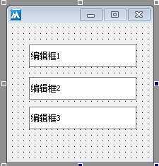
代码编写如下图：
给编辑框2设置当前属性为假。
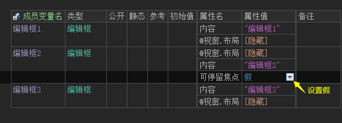
运行效果如下图：
左图：设置前按TAB键的效果。
右图：设置后按TAB键的效果。
可以看到，当设置当前属性为假后，按tab键时会跳过编辑框2组件。
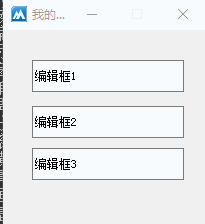
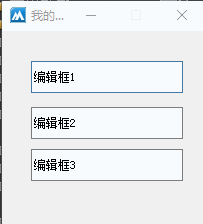
● 可视(读写)
帮助文档如下图：
本组的作用可用于设置组件的显示和隐藏状态，同名的读属性可用于判断当前组件是否显示。
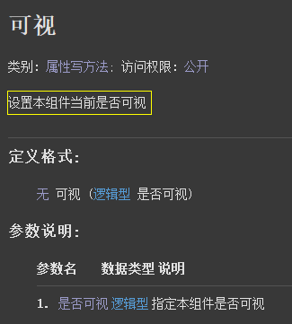
界面设计如下图：
在窗口中放一个按钮和一个编辑框组件用于演示。
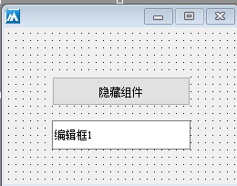
代码编写如下图：
当按钮点击后，判断编辑框的可视状态，来绝对编辑框是否显示。
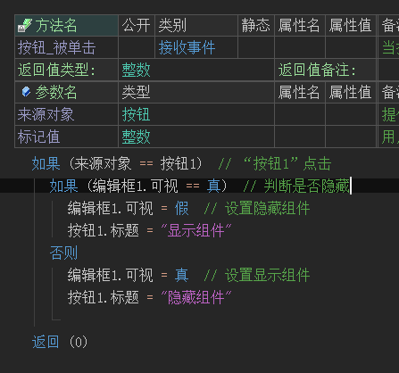
运行效果如下图：
当按钮点击后，组件可以在显示和不显示之间任意切换。
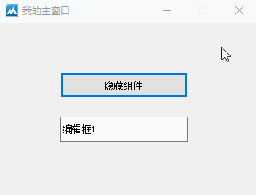
●宽度 (读写)
帮助文档如下图：
本属性可用于设置组件宽度，单位像素。同名读属性可用于读取宽度。
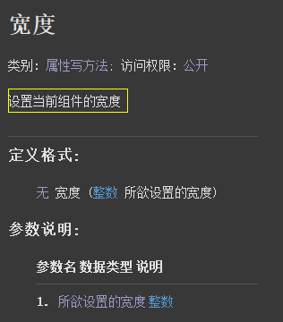
界面设计如下图：
设计界面时让编辑框组件的尺寸小于按钮尺寸。
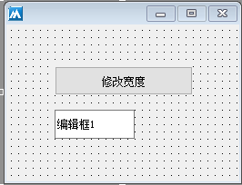
代码编写如下图：
按钮点击后，设置编辑框的宽度等于按钮宽度。
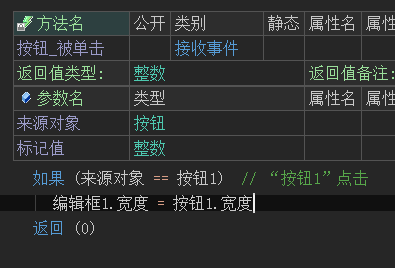
运行效果如下图：
最终编辑框尺寸将会和按钮尺寸一致。
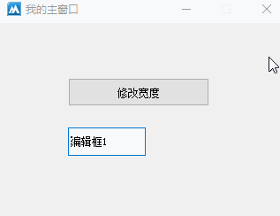
● 高度(读写)
帮助文档如下图：
本属性用于设置组件高度，单位像素。同名读属性可用于读取组件高度。
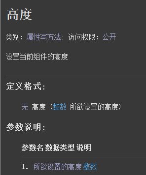
界面设计如下图：
设计界面时让编辑框组件的尺寸小于按钮尺寸。
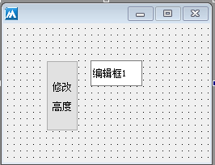
代码编写如下图：
取出按钮的高度赋值给编辑框的高度。
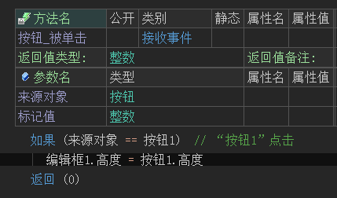
运行效果如下图：
最终两个组件的高度将一致。
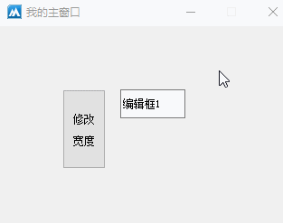
● 左边(读写)
帮助文档如下图：
本属性可修改组件左边距离父组件左边的距离，单位像素。
如果当前组件无父组件时，将以窗口为准。
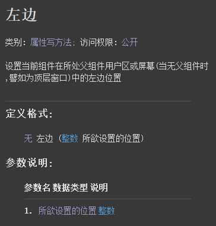
界面设计如下图：
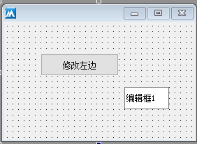
代码编写如下图：
当按钮点击后，修改编辑框的左边等于按钮的左边位置。
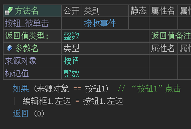
运行效果如下图：
最终可看到编辑框的左边与按钮左边对齐。
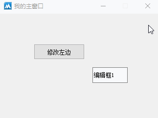
● 顶边(读写)
帮助文档如下图：
本属性可修改组件顶边距离父组件顶边的距离，单位像素。
如果当前组件无父组件时，将以窗口为准。
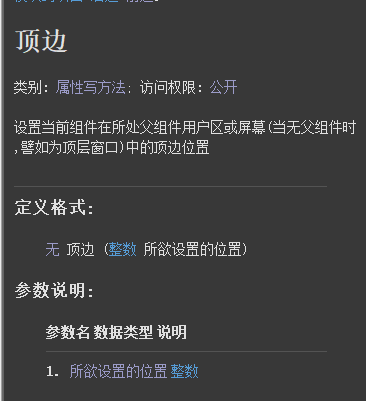
代码编写如下图：
当按钮点击后，修改编辑框的顶边等于按钮顶边。
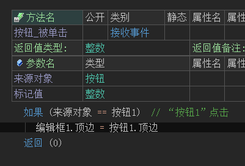
运行效果如下图：
最终编辑框顶边位置等于按钮顶边。
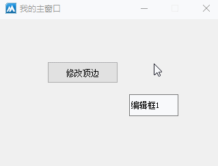
●标题 (读写)
帮助文档如下图：
通过本属性可设置组件标题，但并非所有组件都具备标题显示，例如：画板、进度条等组件就不具备标题显示。
注意：如果需要在组件上显示&符号，则需要输入两个符号才能显示出来。
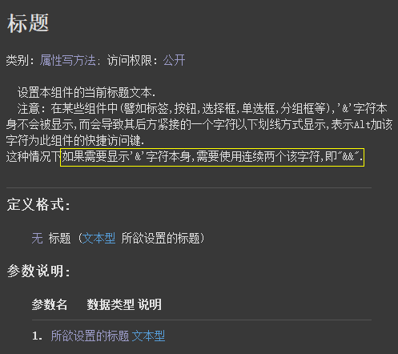
界面设计如下图：
在窗口上放置一些可以设置标题的组件。
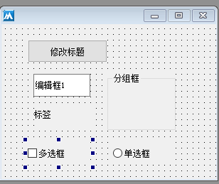
代码编写如下图：
按钮点击后修改这些标题。
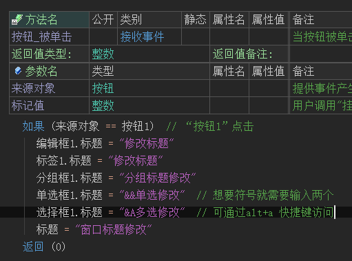
运行效果如下图：
最终可以看到所有组件的标题内容都被修改。
并且可以看到单独使用&符号时并不会显示，只有使用了两个&&符号后才会显示出来。
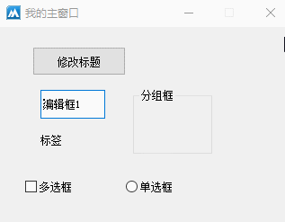
● 禁止(读写)
帮助文档如下图：
通过本属性可以让组件禁止操作，同名读属性可以判断组件是否被禁止。
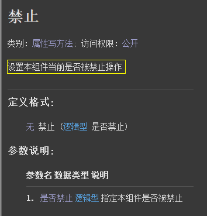
界面设计如下图：
在窗口中放两个组件，分别是按钮和编辑框。
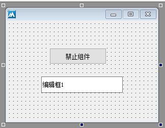
代码编写如下图：
按钮点击后判断编辑框的禁止状态，并执行是否对编辑框进行禁止操作。
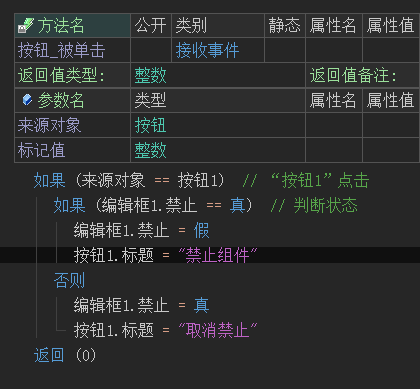
运行效果如下图：
当按钮点击后编辑框将被禁止，禁止后将不能操作编辑框组件，取消禁止后可继续操作。
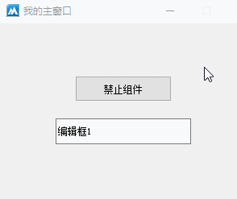
● 组件位置(读写)
帮助文档如下图：
本属性可用于调整组件位置，并且在调整位置的同时设置组件尺寸。
注意：针对父组件的左上角为准。
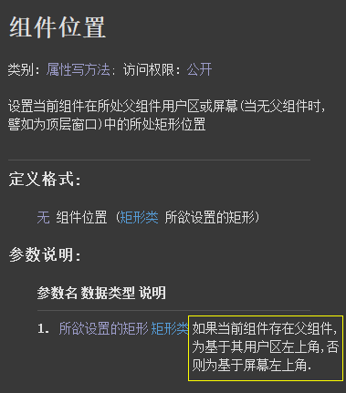
代码编写如下图：
1、定义类型为“矩形类”的变量，分别设置矩形区域属性。
2、给编辑框组件设置本属性值为此变量。
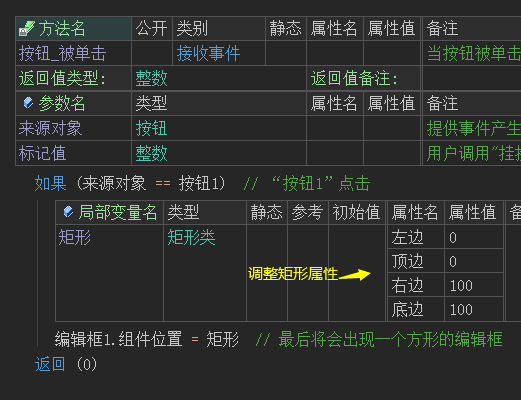
运行效果如下图：
最终编辑框组件位置和尺寸均被改变。
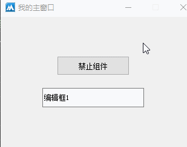
● 首组件(读写)
帮助文档如下图：
本属性可设置一组组件的首组件，通常用于单选框操作。
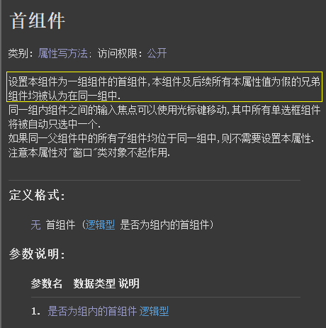
界面设计如下图：
在界面中设置两组单选框组件。
第一组：直接放置在窗口中。
第二组：放置在分组框容器内。
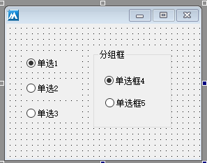
代码编写如下图：
分别给第一组和第二组的第一个组件都设置首组件属性。
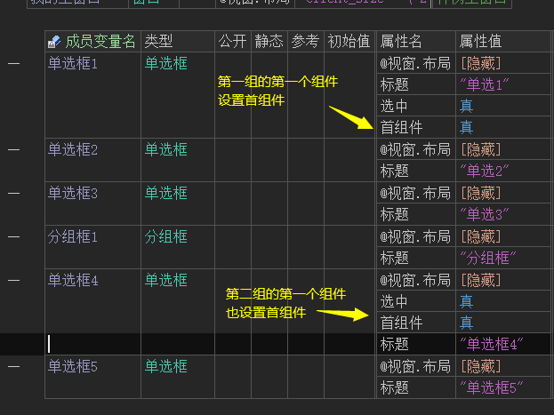
运行效果如下图：
左图：没设置本属性之前的效果，可以看到两组组件之间冲突。
右图：设置后可以看到两组组件可以正常操作。
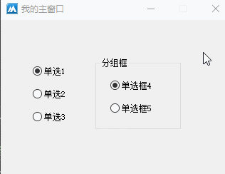
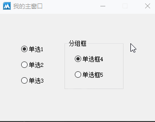
●字体 (写)
帮助文档如下图：
通过本属性可以设置组件字体样式，共有7个选项，每个选项之间用英文逗号隔开。
例如："宋体, 10, 0, 1, 1, 0, 100"
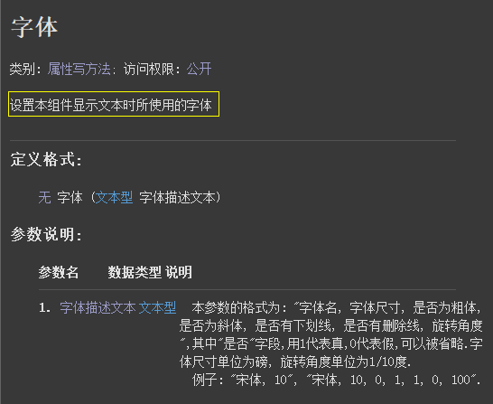
界面设计如下图：
在窗口中放一个按钮和编辑框。
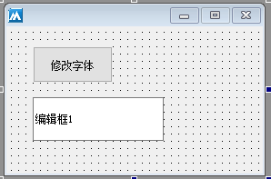
代码编写如下图：
第一种方式：按照帮助页的注释规则，直接设置本属性值。
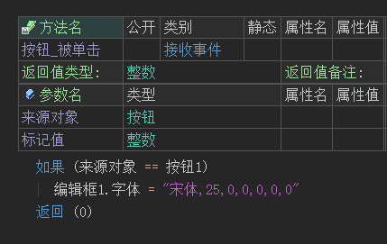
第二种方式：在属性栏可以点击打开字体选择器，手动选择字体样式。
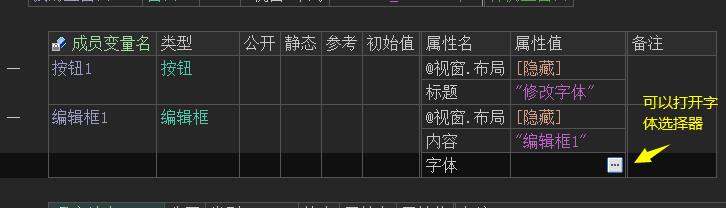
运行效果如下图：
最终编辑框的字体将会被改变。
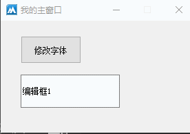
● 标准鼠标指针(写)
帮助文档如下图：
通过本属性可设置当前组件鼠标经过时的鼠标指针样式。
属性值调用方式：标准鼠标指针类型.XXX。
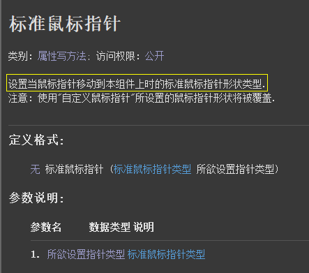
界面设计如下图：
在窗口中放一个按钮和两个编辑框。
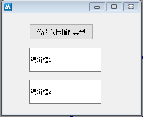
代码编写如下图：
按钮点击后，分别给编辑框设置不同的鼠标样式。
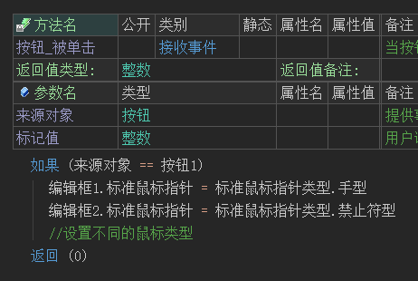
运行效果如下图：
最终可以看到，当按钮点击后，鼠标经过编辑框时样式会发生变化。
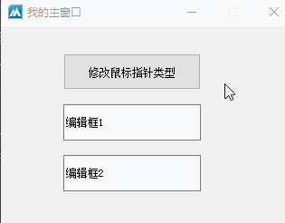
●组件边框 (写)
帮助文档如下图：
本属性用于设置组件边框效果，调用方式“组件边框类型.XXX”.
注意：本属性对窗口无效。
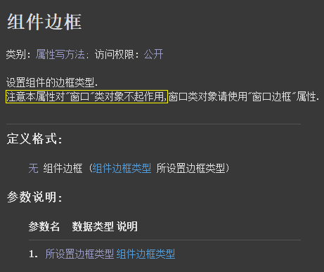
代码编写如下图：
按钮1被点击后，分别设置两个编辑框组件的边框效果。
运行效果如下图：
最终可看到编辑框样式发生改变。
● 自定义鼠标指针(写)
帮助文档如下图：
通过本属性可以给当前组件设置一个外部的指针文件，后缀名通常为cur格式。
注意：使用本属性会覆盖“标准鼠标指针”属性。
界面设计如下图：
在窗口上放两个编辑框，给其中一个编辑框设置本属性，引入一个鼠标指针文件。
运行效果如下图：
运行后可以看到当前“编辑框1”和“编辑框2”显示的鼠标指针不同。
● 标记(变)
帮助文档如下图：
本变量是窗口组件的成员变量，任何窗口组件都可以使用，用于设置一个标记文本。
界面设计如下图：
在窗口中放一个按钮和编辑框。
代码编写如下图：
1、在表格属性中设置标记文本。
2、按钮点击后取出设置的标记文本。
运行效果如下图：
最终按钮的标记文本被取出。
●失去焦点 (事件)
“失去焦点”帮助文档如下图：
当组件失去焦点的时候将会触发本事件。
“获得焦点”帮助文档如下图：
当组件获得焦点后会触发本事件。
代码编写如下图：
分别添加这两个事件，并给编辑框的内容赋值。
运行效果如下图：
最终可以看到，当编辑框失去和获得输入焦点时，编辑框的内容将会被随之改变。
● 字符输入(事件)
帮助文档如下图：
当任意字符被输入时，将会触本事件，其中也包含退格键，回车键。
界面设计如下图：
打开设计器在窗口上方两个编辑框组件。
代码编写如下图：
添加字符输入事件，将编辑框1输入的字符显示在编辑框2中。
运行效果如下图：
最终可看到编辑框1的字符出现在了编辑框2中。
● 按下某键(事件)
“按下某件”帮助文档如下图：
当按下键盘某个按键时可触发本事件，并返回两个参数。
参数1：调用方式“按键码.XX”，包含了键盘上所有的按键。
参数2：调用方式“辅助键状态.XX”，主要用于组合按键操作，包含了“Ctrl”、“Shift”和“Alt”按键。。
“放开某键”帮助文档如下图：
当键盘上的按键被放开时触发本事件，返回的两个参数与“按下某件”一致。
代码编写如下图：
分别添加这两个事件，并判断ctrl键被按下和放开。
运行效果如下图：
最终可看到编辑框2中输出了相关字符，证明ctrl监听成功。
实现组合按键代码：
组合按键通常使用“放开某键”事件。
添加事件后，判断“键代码”和“辅助键状态”是否等于指定按键，如果相等就输出内容。
运行效果如下图：
最终当键盘放开Ctrl+B按键后，将会在编辑框2中输出信息。
● 滚轮被滚动(事件)
帮助文档如下图：
当鼠标滚轮被滚动后触发本事件，共返回两个参数。
参数1：用于判断滚动方向。
参数2：用于组合键判断。
代码编写如下图：
添加本事件后判断“滚动距离”并输出对应内容。
运行效果如下图：
最终当在编辑框1中滚动鼠标滚轮滚轮时，编辑框2会输出内容。
● 被双击(事件)
帮助文档如下图：
当组件被双击时，会触发本事件并返回三个参数。
参数1、2：返回鼠标所在位置。
参数3：用于组合键判断。
代码编写如下图：
当编辑框1被双击时，在编辑框2中输出内容。
运行效果如下图：
最终可看到编辑框内容中输出了不同的坐标位置。
● 鼠标位置被移动(事件)
帮助文档如下图：
当组件鼠标指针位置发生移动时，会触发本事件并返回三个参数。
参数1、2：返回鼠标所在位置。
参数3：用于组合键判断。
代码编写如下图：
判断编辑框2鼠标移动时，在编辑框1中输出坐标信息。
运行效果如下图：
可以看到坐标被实时显示在编辑框1中。
● 鼠标右键被按下(事件)
“鼠标右键被按下”帮助文档如下图：
当组件鼠标右键被按下时，会触发本事件并返回三个参数。
参数1、2：返回鼠标所在位置。
参数3：用于组合键判断。
“鼠标右键被放开”帮助文档如下图：
当组件鼠标右键被放开时，会触发本事件并返回三个参数。
参数1、2：返回鼠标所在位置。
参数3：用于组合键判断。
代码编写如下图：
分别添加这两个事件，并在编辑框中输出内容。
运行效果如下图：
最终当鼠标右键按下和放开时会分别显示不同的信息。
● 鼠标左键被按下(事件)
“鼠标左键被按下”帮助文档如下图：
当组件鼠标左键被按下时，会触发本事件并返回三个参数。
参数1、2：返回鼠标所在位置。
参数3：用于组合键判断。
“鼠标左键被放开”帮助文档如下图：
当组件鼠标左键被放开时，会触发本事件并返回三个参数。
参数1、2：返回鼠标所在位置。
参数3：用于组合键判断。
代码编写如下图：
分别添加这两个事件，并在编辑框中输出内容。
运行效果如下图：
最终当鼠标左键按下和放开时会触发本事件。
● 信息框
帮助文档如下图：
本方法在使用时可以不依赖窗口组件，但是必须保证调用本方法时，当前所处类是窗口。
参数1：提供要显示的信息。
参数2：提供按钮或图标类型，例如“信息框按钮.取消是否钮 + 信息框按钮.信息图标”。
参数3：提供信息框标题。
界面设计如下图：
打开窗口后放一个按钮。
代码编写如下图：
1、定义类型为“返回按钮类型”的局部变量用来存储信息框返回值。
2、调用信息框方法，设置相关参数后赋值给定义的变量。
3、判断被点击的按钮类型。
运行效果如下图：
最终可看到当信息框按钮被点击后，窗口标题也会随之修改。
● 允许重画
“允许重画”帮助文档如下图：
本方法配合“禁止重画()”方法，可以实现快速加载数据。
同样也可以防止数据加载过快发生的组件闪烁现象。
“禁止重画”帮助文档如下图：
调用本方法可让组件禁止绘制，提升组件加载数据效率，防止组件闪烁。
界面设计如下图：
在窗口上放三个组件分别是：按钮，列表框和标签。
代码编写如下图：
1、按钮点击后首先记录启动时间。
2、调用禁止重画后循环加载1000条数据到列表框。
3、循环结束后调用允许重画。
4、最后计算耗时。
运行效果如下图：
左图：未使用禁止重画方法耗时“0.22秒”。
右图：使用后仅耗时“0.03”秒，快了7倍。
● 创建组件
帮助文档如下图：
通过本方法可以动态创建窗口组件，成功返回真。
注意：创建窗口组件时务必使用成员变量。
代码编写如下图：
1、定义类型为“按钮”的成员变量，起名“按钮1”。
2、添加“创建完毕”窗口事件，通过“按钮1”调用本方法创建组件。
运行效果如下图：
软件运行后将会在窗口左上角看见一个100*100尺寸的按钮组件。
● 取屏幕位置
帮助文档如下图：
通过本方法可以取出当前组件在屏幕中的位置，如果单独调用本方法则会取出窗口在屏幕中的位置。
界面设计如下图：
在窗口中放一个按钮和编辑框。
代码编写如下图：
分别取出窗口位置和按钮1的位置信息。
运行效果如下图：
最终可看到位置信息被成功取出。
● 取用户区宽度
帮助文档如下图：
可用于取出组件宽度或者当前窗口用户区宽度。
注意：窗口用户区宽度不等于窗口宽度。
代码编写如下图：
分别取出窗口用户区宽度和按钮宽度。
运行效果如下图：
按钮宽度和窗口用户区宽度被成功取出。
● 取用户区高度
帮助文档如下图：
本方法可用于取出窗口用户区高度或组件高度。
注意：窗口用户区高度不等于窗口高度。
代码编写如下图：
按钮点击后分别取出窗口用户区高度或按钮高度。
运行效果如下图：
最终两个高度尺寸均被取出。
● 取用户区矩形
帮助文档如下图：
通过本方法可取出组件或者窗口的矩形区域。
注意：并非坐标信息。
代码编写如下图：
按钮点击后分别取出窗口和按钮的矩形区域。
运行效果如下图：
最终两个矩形区域被分别取出。
● 取窗口句柄
帮助文档如下图：
在使用mfc界面库时，任何一个窗口组件都有句柄，通过本方法可以取出句柄信息。
代码编写如下图：
窗口句柄可用于投递消息判断。
1、按钮点击后通过按钮组件投递消息。
2、添加“消息过滤”窗口虚拟方法，可以获取按钮组件投递的消息。
3、判断消息值和窗口句柄，可以确定是否为“按钮1”投递的消息。
运行效果如下图：
最终编辑框1将会输出内容。
● 可有焦点
帮助文档如下图：
本方法可用于判断当前组件是否获得焦点。
代码编写如下图：
按钮点击后调用本方法判断。
运行效果如下图：
因为当按钮点击后，焦点会转移到按钮上，因此会提示编辑框1没有焦点。
● 是否为空
“是否为空”帮助文档如下图：
通过本方法可用于判断窗口组件是否被创建。
“销毁”帮助文档如下图：
调用当前方法可销毁当前组件，销毁后窗口组件将会消失在窗口上。
界面设计如下图：
在窗口中放两个按钮和一个编辑框组件。
代码编写如下图：
1、按钮1点击后执行销毁方法。
2、按钮2点击后判断当前组件是否存在。
运行效果如下图：
最终可以看到编辑框1销毁前后弹出的信息框不一样。
● 用户区截图
以上两个方法用法一致，不同之处在于“用户区截图”不会截图菜单标题栏边框等信息。
而组件截图会将组件完整的元素进行截图操作。
“组件截图”帮助文档如下图：
调用本方法会将组件所有区域完整截图，单独调用则截图窗口。
参数1：提供一个类型为“位图对象类”的变量。
参数2、3：提供要输出的尺寸、可留空。
界面设计如下图：
在窗口中放一个按钮，一个编辑框和一个图片框组件。
代码编写如下图：
1、定义类型为“位图对象类”，并将变量放入到“组件截图”方法的参数中。
2、取出位图对象的字节集数据。
3、将取出的字节集数据设置在图片框上。
运行效果如下图：
最终可看到当前整个窗口所有内容被截图并显示在图片框上。
● 移动
帮助文档如下图：
调用本方法可以进行组件移动操作。
参数1、2：相对于父组件设置当前组件的左边和顶边位置，。
参数3、4：设置组件的宽度和高度。
界面设计如下图：
在窗口中放一个按钮和编辑框组件。
代码编写如下图：
按钮点击后移动编辑框组件到窗口左上角。
运行效果如下图：
最终编辑框组件出现在窗口左上角区域。
● 置字体
帮助文档如下图：
调用本方法可以设置组件字体信息，参数为字体对象类。
代码编写如下图：
在窗口创建完毕下，调用“从描述文本创建字体()”方法就可以创建“字体对象类”。
本方法所提供的文本参数与“字体”写属性的文本一致。
运行效果如下图：
最终 软件运行后编辑框的字体会被修改。
● 删除到回收站
帮助文档如下图：
调用本方法可实现删除文件到系统回收站。
注意：本方法只能在窗口或者MDI主窗口中使用，通过窗口组件调用无效。
代码编写如下图：
按钮点击后，调用本方法删除一个文件。
运行效果如下图：
可以看到当按钮点击后，系统回收站会出现刚删除的文件。
● 置父窗口
帮助文档如下图：
通过本方法可以调整当前组件的父组件，参数填写目标父组件。
界面设计如下图：
在窗口中放一个按钮和分组框。
代码编写如下图：
按钮点击后，设置当前按钮组件的父组件为分组框1.
运行效果如下图：
最终可以看到按钮的父组件由窗口变成了分组框。
● 获取焦点
帮助文档如下图：
调用本方法可以让指定组件获得焦点。
界面设计如下图：
在窗口中放一个按钮和两个编辑框组件。
代码编写如下图：
1、按钮点击后编辑框2调用本方法获得焦点。
2、添加“编辑框_获得焦点”事件验证编辑框是否获得焦点。
运行效果如下图：
最终编辑框2的内容被改变，证明获取焦点成功。
● 调整层次
帮助文档如下图：
调用本方法可调整组件层次，参数调用方式“组件层次.XX”.
界面设计如下图：
在窗口中放四个按钮，其中让“按钮1”实现覆盖“按钮2”的效果。
代码编写如下图：
调整按钮被点击后，将“按钮2”调整到顶层。
运行效果如下图：
最终按钮2将会被调整到所有组件顶层显示。
● 输入框
帮助文档如下图：
通过本方法可以弹出一个输入文本的对话框。
参数1：用来存放输入结果。
参数2、3：填写提示信息和标题。
参数4：设置输入框内的初始文本。
参数5：调用方式“输入框输入方式.XX”.
界面设计如下图：
在窗口中放一个按钮和一个编辑框组件。
代码编写如下图：
按钮点击后弹出一个输入框并将输入结果显示在编辑框中。
运行效果如下图：
最终结果显示在编辑框中。
● 取字体
帮助文档如下图：
调用本方法可取出设置的字体信息，返回值为“字体对象类”。
如果没有设置过字体，会返回默认字体信息。
代码编写如下图：
按钮点击后调用本方法取出编辑框的字体信息。
运行效果如下图：
编辑框组件的字体信息被取出。
● 弹出实例菜单
帮助文档如下图：
在屏幕指定位置弹出一个菜单。
注意：本方法不能通过窗口组件调用，否则菜单点击命令会失效。
代码编写如下：
1、定义一个基础类为“菜单类”的类，右键可以打开设计器。
2、在设计器中简单的设计三个菜单。
3、设计完毕后效果如图。
4、定义类型为“菜单按钮”的变量，此变量类型名称要和定义的菜单类名称一致。
5、按钮点击后调用本方法弹出此实例菜单。
6、添加“接收到命令”事件，可以判断菜单被点击，当菜单点击后取菜单标题显示在编辑框中。
运行效果如下图：
当按钮点击后可弹出菜单，菜单点击后编辑框会显示菜单标题。
● 弹出菜单
帮助文档如下图：
本方法和“弹出实例菜单”的区别在于，使用本方法弹出菜单可以不定义菜单变量。
代码编写如下图：
1、按钮点击后，调用本方法弹出菜单。
2、在菜单被点击后，如果想要取出菜单标题依然可以通过定义菜单变量的形式取出。
运行效果如下图：
● 执行
帮助文档如下图：
通过本方法可以打开指定文件。
参数1：提供要打开的文件路径。
参数2：调用方式“所执行命令类型.XXX”。
参数3：如果打开的文件是可执行文件，本参数可提供传入命令行。
参数4：提供一下默认路径。
注意：本方法只能在窗口或者MDI主窗口中使用。
代码编写如下图：
当按钮点击后调用本方法打开一个txt文件。
运行效果如下图：
最终可看到txt文件被打开。
● 提到前方
帮助文档如下图：
调用本方法可将组件提到前方，如果在窗口类中直接调用，将会把当前窗口提到最前方。
界面设计如下图：
在窗口中放三个按钮，其中按钮2覆盖按钮3.
代码编写如下图：
当按钮点击后，将按钮3提到前方。
运行效果如下图：
最终按钮3将会覆盖按钮2。
● 浏览文件夹
帮助文档如下图：
调用本方法可以实现文件夹选择功能，通过调整参数2还可以实现选择文件功能。
注意：本方法不支持窗口组件调用。
界面设计如下图：
在窗口上放一个按钮和一个编辑框。
代码编写如下图：
按钮点击后调用本方法将结果赋值给编辑框。
运行效果如下图：
最终选择结果会显示在编辑框中。
● 激活
上述两个方法用法和作用基本一致，此处讲解“激活”方法。
帮助文档如下图：
调用本方法可激活窗口，注意本方法只能通过窗口或MDI窗口调用。
代码编写如下图：
1、定义一个新的窗口类。
2、在主窗口中定义的窗口2变量。
3、主窗口创建完毕后载入窗口2.
4、主窗口按钮点击后，激活窗口2.
运行效果如下图：
最终可看到窗口2被激活到前面。
● 进度复制文件
帮助文档如下图：
调用本方法可进行文件复制操作，并同时会显示一个进度对话框。
注意：本方法不支持窗口组件调用，同时如果复制的文件过小不会显示进度。
代码编写如下图：
按钮点击后调用本方法将D盘的文件复制到G盘中。
运行效果如下图：
最终可看到文件出现在G盘中，因复制的文件过小因此没有出现进度提示。